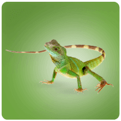
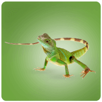
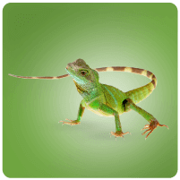
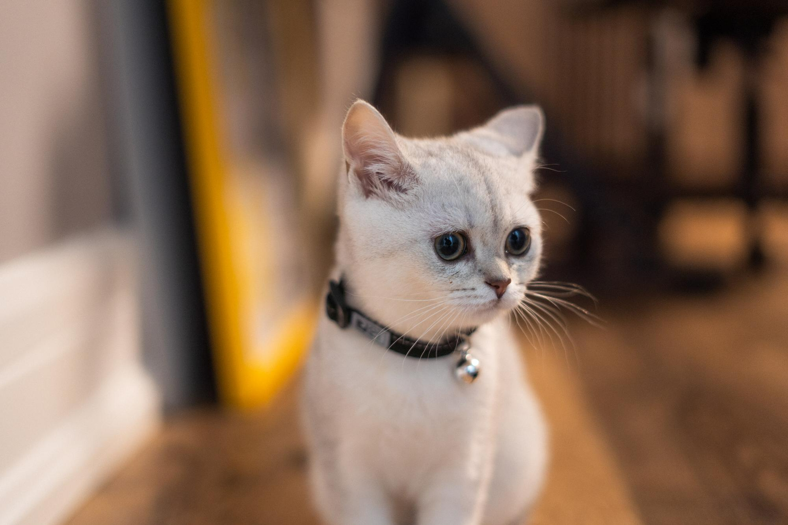
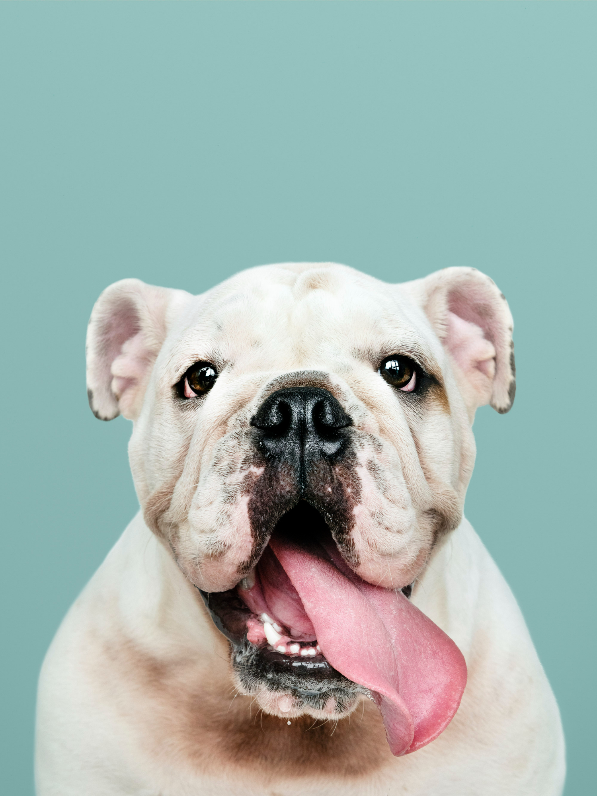
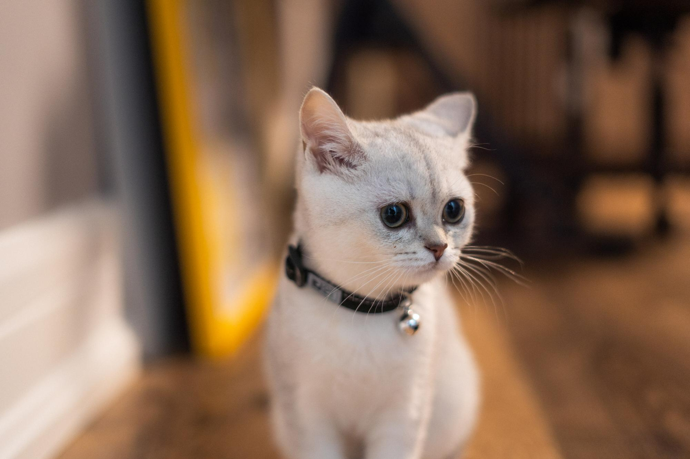
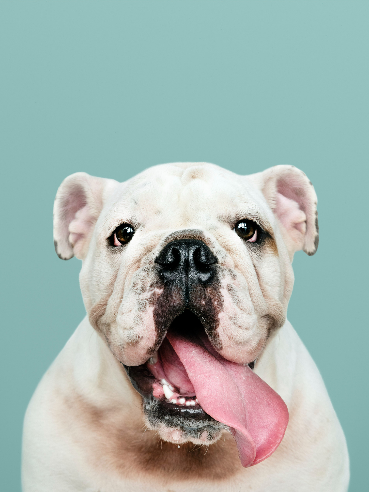

Estamos seguros de que los siguientes consejos te ayudarán

Diferentes tipos de mascotas
- Antes que nada, visita al veterinario
- Atiende sus necesidades nutricionales.
- Aplica las vacunas a tiempo.
- Entrenamiento como bienestar
- Busca juguetes seguros.
- Limpia sus patas regularmente.
- Lavado de dientes.
- Entregarles todo tu amor

¿Qué cuidados debe tener un perro en casa?
El principal cuidado de higiene básico de un perro es el cepillado diario y el baño periódico. Este baño no puede ser más de una vez al mes y con un champú especial. También es recomendable revisar y limpiar los oídos una vez a la semana.F
volver al inicio
¿Qué hacer para tener un gato sano en casa
Para que el gatito crezca sano es fundamental que su alimento sea de calidad y darle la cantidad adecuada para su tamaño y edad. Es imprescindible que tenga tres recipientes, uno para la comida seca, otro para la comida húmeda y otro para el agua, que debes cambiar a menudo para que esté fresca y limpia.
volver al inicio
¿Un cobayo en casa?
Los cobayos o cobayas son animales muy sociables que pueden ser grandes compañeros de nuestros hijos, pero requieren muchos cuidados. Es una tentación regalarles un animalito para que se distraigan durante las vacaciones. Es una manera también de enseñarles a ser responsables. Sin embargo, no hay que olvidar que son seres vivos: aunque no puedan expresar hambre o malestar de la misma manera que un gato o un perro, unos cuidados insuficientes afectan a su bienestar físico y emocional. Por tanto, si le regalamos una cobaya a un niño, los adultos hemos de ser también responsables de ella y asegurarnos de que recibe las atenciones necesarias
volver al inicio
¿Qué cuidados debe tener la pecera en casa?
- Se debe cambiar el agua periódicamente.
- Aplicar cada semana un test para medir niveles químicos y bacterianos del agua.
- Utilizar productos para controlar el nivel de cloro y el pH del agua.
- Lavar por lo menos una vez al mes el sustrato y grava del acuario.

¿Cuál es la mejor comida para pájaros?
La mejor alimentación que le puedes dar a tu ave (sea ninfa, agapornis, canario, yaco, guacamayo, periquito o casi cualquier otro) es el pienso compuesto, esto es, pienso extrusionado en forma de pellets (similar al de los perros y los gatos) pero especialmente formulado para las aves.
volver al inicio
¿Que cuidados debo tener con una lagartija en casa
La manera de ofrecer el agua a tu mascota es colocar unas gotas sobre el morro y esperar a que las lama con su lengua. Si lo hace puedes poner más gotas directamente en su boca mientras siga tragándolas. Si no quiere beber de esta manera, tendrás que administrársela a la fuerza. Alimento: Si hay insectos en su hogar, como moscas, mosquitos u otros insectos pequeños, las lagartijas pueden ser atraídas por la abundancia de comida. Son depredadores naturales de insectos. Humedad: Las lagartijas requieren ciertos niveles de humedad para mantener su piel saludable.
volver al inicioNuestros clientes mas fieles
 


